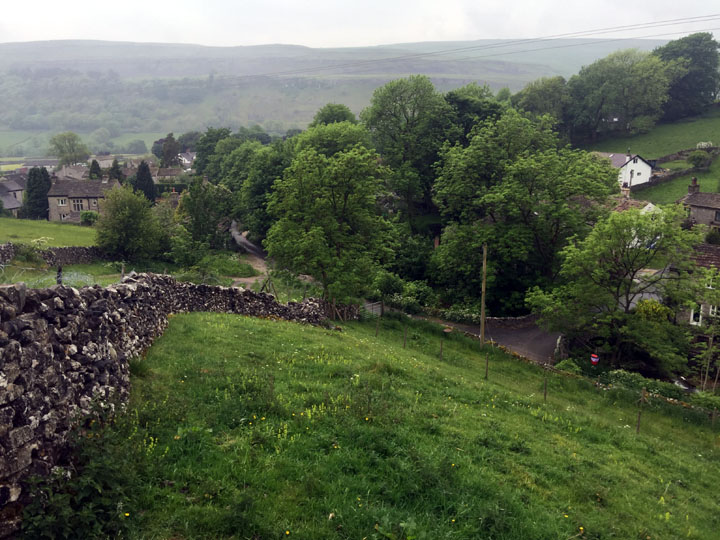
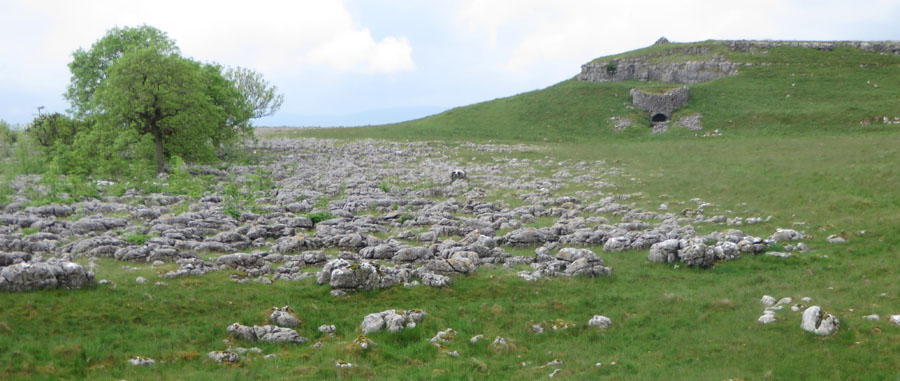

It was dreary but not raining when we started out of Kettlewell.
Our route began with a climb, as usual.

There was a light rain as we crossed field after field, and wet stile after wet stile.
After a few miles we came to an area of disused mines, with old shafts and spoil heaps.
Not much later we began descending on a "turf road", and we found ourselves back in limestone country.

Later we went through a former lead mining area, this one with interesting information boards. We followed the numbered posters until it started pouring rain.
Our route led us down a path to Hebden Beck. We had to cross the beck several times on stones, and as we went downstream the river stones got harder and harder to manage. The heavy rain was clearly raising the water level fast. Half an hour later we were relieved to be in Hebden, and we were looking forward to drying off a bit in the pub -- but to our dismay it was closed for the afternoon. So we stopped in a bus shelter to wipe our faces and shake off some water, like wet dogs.
Through Hebden then, and down to the suspension bridge that we remembered fondly from the Dales Way.
Up the hill on the other side, looking back down to the suspension bridge:

Onward and upward, through another field. Maybe the cows were wondering why we were out walking in the rain?
Finally, up the familiar flagged path from Linton Falls
and on into Grassington, to end a marvelous six days!
Home ** Previous Day